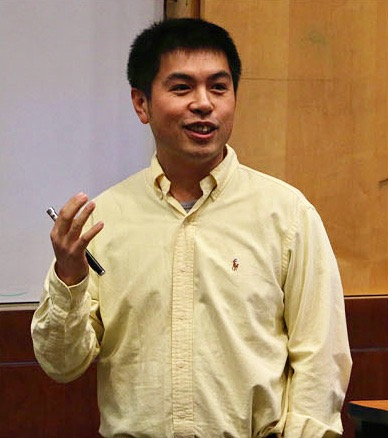

Georgia

Dr. Zhipeng Cai received his PhD and M.S. degrees in the Department of Computing Science at University of Alberta, and B.S. degree from Beijing Institute of Technology. Dr. Cai is currently an Associate Professor in the Department of Computer Science at Georgia State University. Prior to joining GSU, Dr. Cai was a research faculty in the School of Electrical and Computer Engineering at Georgia Institute of Technology. Dr. Cai's research areas focus on Cyber-Security, Privacy, Networking and Big data. Dr. Cai is the recipient of an NSF CAREER Award.